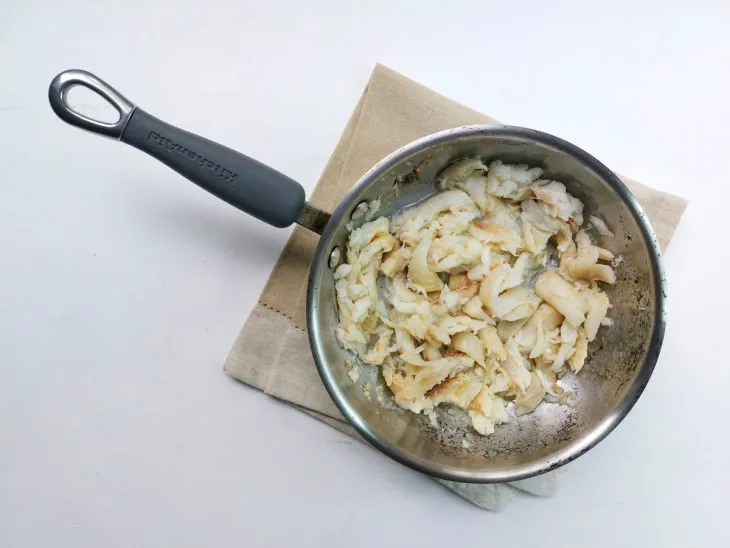

-
 57 receitas com frango que são deliciosas e fáceis de preparar
57 receitas com frango que são deliciosas e fáceis de preparar
-
 42 receitas com peito de frango práticas e irresistíveis
42 receitas com peito de frango práticas e irresistíveis
-
 32 receitas de filé de frango para variar o cardápio do dia a dia
32 receitas de filé de frango para variar o cardápio do dia a dia
-
 10 receitas de fricassê de frango cremoso que fazem sucesso na mesa
10 receitas de fricassê de frango cremoso que fazem sucesso na mesa
 Sobrecoxa na airfryer
Sobrecoxa na airfryer
Ingredientes
Modo de preparo
 Reúna todos os ingredientes;
Coloque o bacalhau de
Reúna todos os ingredientes;
Coloque o bacalhau de
molho de uma dia para o outro para
dessalgar;;
Em uma panela com água, cozinhe
as batatas, as cenouras, a ervilha
fresca e os ovinhos de codorna;

Retire a água do bacalhau, desfie
bem e refogue, ligeiramente, com
uma colher de azeite;
Junto do bacalhau, refogue também
o pimentão, a cebola e o alho;
 Em uma travessa, disponha
Em uma travessa, disponha
respectivamente as batatas, as
cenouras, o pimentão, o bacalhau, a
cebola e o alho;
Acrescente a ervilha e decore com
os ovinhos partidos ao meio e o
cheiro-verde
Em um recipiente separado, faça um
tempero misturando o vinagre com
sal, orégano e um pouquinho de
azeite;
 Está pronto! Bom apetite.
Está pronto! Bom apetite.